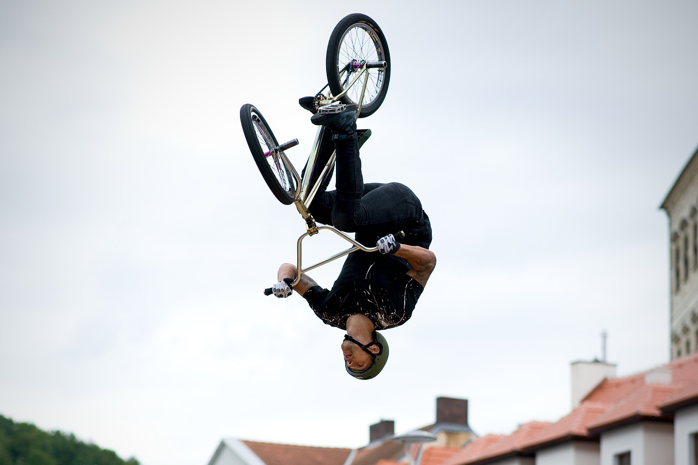

O ciclismo é um esporte que envolve o uso de bicicletas para corridas, passeios ou competições. É uma atividade física muito popular em todo o mundo, pois é uma forma divertida e saudável de exercício.

Existem vários tipos de ciclismo, cada um com suas próprias características e desafios. Alguns dos principais tipos de ciclismo são:
O ciclismo de estrada é um tipo de ciclismo que é realizado em estradas pavimentadas. É geralmente um esporte competitivo, com corridas que variam de curtas a longas distâncias. Os ciclistas usam bicicletas de estrada que são projetadas para velocidade e eficiência.
Algumas das principais competições de ciclismo de estrada incluem o Tour de France, a Volta a Portugal e a Giro d'Italia.
O ciclismo de montanha é um tipo de ciclismo que é realizado em terrenos acidentados, como montanhas, florestas e trilhas. É um esporte que requer habilidades técnicas, resistência e força física. Os ciclistas usam bicicletas de montanha que são projetadas para lidar com terrenos difíceis.
Algumas das principais competições de ciclismo de montanha incluem a Copa do Mundo de MTB e o Campeonato Mundial de MTB.
O ciclismo de pista é um tipo de ciclismo que é realizado em uma pista circular fechada. É um esporte de velocidade que requer habilidades técnicas, força e resistência. Os ciclistas usam bicicletas de pista que são projetadas para velocidade e agilidade.
Algumas das principais competições de ciclismo de pista incluem o Campeonato Mundial de Pista e os Jogos Olímpicos.
O ciclismo de BMX é um tipo de ciclismo que é realizado em uma pista com obstáculos, como rampas, saltos e curvas acentuadas. É um esporte de alta energia que requer habilidades técnicas, coragem e agilidade. Os ciclistas usam bicicletas de BMX que são projetadas para manobras e truques.
Algumas das principais competições de ciclismo de BMX incluem a Copa do Mundo de BMX e os X Games.
O ciclismo indoor é um tipo de ciclismo que é realizado em uma bicicleta estacionária em uma academia ou em casa. É uma forma popular de exercício, pois é de baixo impacto e pode ser adaptada para qualquer nível de condicionamento físico.
Algumas das principais marcas de bicicletas indoor incluem a Peloton e a NordicTrack.